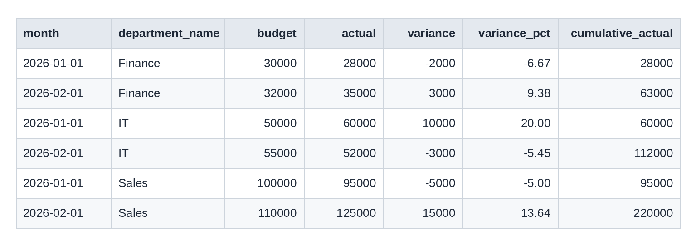

Which departments are over budget?
I used SQL to compare budget and actual spending across departments, measure the variances, and build a monthly report for management.
Final report
Final management report: monthly budget, actual, variance and cumulative spending for each department (result of Query 5 below).

The challenge
The Finance Director needs a clear view of departmental performance. The data has monthly budgets and actual spending, but nobody can easily see which departments are over budget, how spending changes from month to month, or where to look first.
The data
Two tables joined on department_id: monthly_finance (month, department, budget, actual) and departments (department ID and name). The sample covers 3 departments over 2 months (6 records). The figures are illustrative, not real company results. HR has no financial records, so it does not appear in the results.
Table A: monthly_finance (monthly budget and actual for each department)
| month | department_id | budget | actual |
|---|---|---|---|
| 2026-01-01 | 1 | 100000 | 95000 |
| 2026-01-01 | 2 | 50000 | 60000 |
| 2026-01-01 | 3 | 30000 | 28000 |
| 2026-02-01 | 1 | 110000 | 125000 |
| 2026-02-01 | 2 | 55000 | 52000 |
| 2026-02-01 | 3 | 32000 | 35000 |
Table B: departments (department names)
| department_id | department_name |
|---|---|
| 1 | Sales |
| 2 | IT |
| 3 | Finance |
| 4 | HR |
What I did in SQL
- Joined the tables: Combined the financial figures with department names using
JOIN. - Calculated totals and variances: Used
SUMandGROUP BYto get budget, actual, variance and variance % for each department. - Labelled performance: Used
CASE WHENto mark each department as Above, Below or On Budget. - Tracked monthly changes: Used the
LAG()window function to compare each month with the one before. - Counted over and under months: Used conditional
SUM(CASE WHEN ...)to see how often each department missed its budget. - Benchmarked against the average: Used a CTE to find departments above the average department total.
- Built the management report: Added a running total with
SUM() OVER (PARTITION BY ...)so management sees monthly and cumulative spending together.
Behind the report: SQL queries
Each result in the findings below comes from one of these queries.
1. Department performance summary
SELECT
d.department_name,
SUM(m.budget) AS total_budget,
SUM(m.actual) AS total_actual,
SUM(m.actual) - SUM(m.budget) AS variance,
ROUND((SUM(m.actual) - SUM(m.budget)) * 100.0 / SUM(m.budget), 2) AS variance_pct,
CASE
WHEN SUM(m.actual) > SUM(m.budget) THEN 'Above Budget'
WHEN SUM(m.actual) < SUM(m.budget) THEN 'Below Budget'
ELSE 'On Budget'
END AS status
FROM monthly_finance m
JOIN departments d ON d.department_id = m.department_id
GROUP BY d.department_id, d.department_name
ORDER BY variance DESC;Output:
| department_name | total_budget | total_actual | variance | variance_pct | status |
|---|---|---|---|---|---|
| Sales | 210000 | 220000 | 10000 | 4.76 | Above Budget |
| IT | 105000 | 112000 | 7000 | 6.67 | Above Budget |
| Finance | 62000 | 63000 | 1000 | 1.61 | Above Budget |
2. Month-over-month change
SELECT
m.month,
d.department_name,
m.actual,
LAG(m.actual) OVER (PARTITION BY d.department_name ORDER BY m.month) AS previous_month_actual,
m.actual - LAG(m.actual) OVER (PARTITION BY d.department_name ORDER BY m.month) AS change_from_previous_month
FROM monthly_finance m
JOIN departments d ON d.department_id = m.department_id
ORDER BY d.department_name, m.month;Output:
| month | department_name | actual | previous_month_actual | change_from_previous_month |
|---|---|---|---|---|
| 2026-01-01 | Finance | 28000 | NULL | NULL |
| 2026-02-01 | Finance | 35000 | 28000 | 7000 |
| 2026-01-01 | IT | 60000 | NULL | NULL |
| 2026-02-01 | IT | 52000 | 60000 | -8000 |
| 2026-01-01 | Sales | 95000 | NULL | NULL |
| 2026-02-01 | Sales | 125000 | 95000 | 30000 |
3. Months above and below budget
SELECT
d.department_name,
COUNT(m.month) AS total_months,
SUM(CASE WHEN m.actual > m.budget THEN 1 ELSE 0 END) AS above_budget_months,
SUM(CASE WHEN m.actual < m.budget THEN 1 ELSE 0 END) AS below_budget_months,
SUM(m.actual) - SUM(m.budget) AS total_variance
FROM monthly_finance m
JOIN departments d ON d.department_id = m.department_id
GROUP BY d.department_id, d.department_name
ORDER BY total_variance DESC;Output:
| department_name | total_months | above_budget_months | below_budget_months | total_variance |
|---|---|---|---|---|
| Sales | 2 | 1 | 1 | 10000 |
| IT | 2 | 1 | 1 | 7000 |
| Finance | 2 | 1 | 1 | 1000 |
4. Departments above the average
WITH department_totals AS (
SELECT department_id, SUM(actual) AS total_actual
FROM monthly_finance
GROUP BY department_id
),
average_total AS (
SELECT AVG(total_actual) AS avg_actual
FROM department_totals
)
SELECT d.department_name, dt.total_actual
FROM department_totals dt
JOIN departments d ON d.department_id = dt.department_id
CROSS JOIN average_total a
WHERE dt.total_actual > a.avg_actual;Output:
| department_name | total_actual |
|---|---|
| Sales | 220000 |
5. Final management report with running total
SELECT
m.month,
d.department_name,
m.budget,
m.actual,
m.actual - m.budget AS variance,
ROUND((m.actual - m.budget) * 100.0 / m.budget, 2) AS variance_pct,
SUM(m.actual) OVER (
PARTITION BY d.department_name
ORDER BY m.month
ROWS BETWEEN UNBOUNDED PRECEDING AND CURRENT ROW
) AS cumulative_actual
FROM monthly_finance m
JOIN departments d ON d.department_id = m.department_id
ORDER BY d.department_name, m.month;Output:
| month | department_name | budget | actual | variance | variance_pct | cumulative_actual |
|---|---|---|---|---|---|---|
| 2026-01-01 | Finance | 30000 | 28000 | -2000 | -6.67 | 28000 |
| 2026-02-01 | Finance | 32000 | 35000 | 3000 | 9.38 | 63000 |
| 2026-01-01 | IT | 50000 | 60000 | 10000 | 20.00 | 60000 |
| 2026-02-01 | IT | 55000 | 52000 | -3000 | -5.45 | 112000 |
| 2026-01-01 | Sales | 100000 | 95000 | -5000 | -5.00 | 95000 |
| 2026-02-01 | Sales | 110000 | 125000 | 15000 | 13.64 | 220000 |
Key findings
- Total budget was €377,000 and total actual spending €395,000, so spending is 4.77% above budget (€18,000 over).
- Sales has the largest overspend in euros: €220,000 against a €210,000 budget (+€10,000, 4.76%).
- IT has the highest overspend in percentage terms: +€7,000, or 6.67%.
- Finance is only slightly over: +€1,000 (1.61%).
- Sales spending rose by €30,000 from January to February, the biggest monthly increase. IT fell by €8,000.
- Every department had one month above and one month below budget, but all three finished the period over budget.
- Sales is the only department above the average department total (€131,667).
Recommendation
Investigate Sales first for the size of its overspend and its February jump, then review IT's cost drivers because its percentage overspend is the highest. These results show where to look, not why the variances happened. With more months and cost categories, the same queries can support regular monthly reporting.
Tools used
SQL (MySQL), JOINs, GROUP BY, CASE WHEN, CTEs, window functions (LAG, running totals), variance analysis.